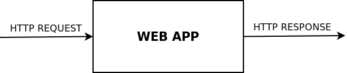
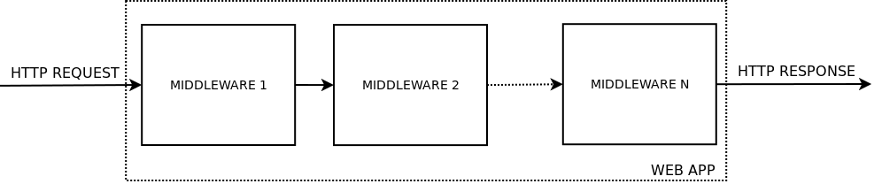
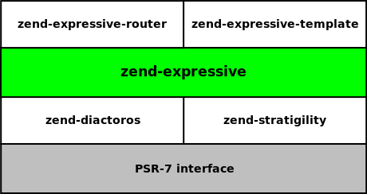
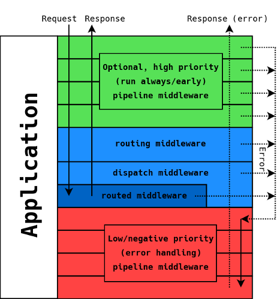

Building web APIs using Zend Expressive
by Enrico Zimuel / @ezimuel
Senior Software Engineer
Zend Technologies, a Rogue Wave Company
Oct 19, ZendCon 2016, Las Vegas


About me

|
|
Web API
API stands for Application Programming Interface and as a term, specifies how software should interact.
Web APIs are delivered over HTTP.
Example of Web API
GET /api/test
HTTP/1.1 200 OK
Connection: close
Content-Length: 14
Content-Type: application/json
{
"msg": "test"
}
Middleware
A function that gets a request and generates a response
use Psr\Http\Message\ResponseInterface as Response;
use Psr\Http\Message\ServerRequestInterface as Request;
function (Request $request, Response $response) {
// manipulate $request to generate a $response
return $response;
}
Web Application

Middleware Application

Middleware in zend-expressive
Use an additional callable during the invoke ($next)
class Middleware
{
public function __invoke(
\Psr\Http\Message\ServerRequestInterface $request,
\Psr\Http\Message\ResponseInterface $response,
callable $next = null
) {
// do something before
if ($next) {
$next($request, $response);
}
// do something after
return $response;
}
}
Zend-expressive
- PSR-7 support (using zend-diactoros)
- Middleware using a callable ($next):
function ($request, $response, $next) - Piping workflow (using zend-stratigility)
- Features: routing, container-interop, templating, error handling
- Stable version 1.0 (28 Jan 2016)
Components layer
Flow overview
Workflow
- Middlewares are piped into a queue (FIFO)
- Middlewares are configured by ruotes
- Zend Expressive provides a routing and a dispatch middleware
- Errors are managed by a FinalHandler pseudo-middleware
Basic API example
use Zend\Expressive\AppFactory;
use Zend\Diactoros\Response\JsonResponse;
chdir(dirname(__DIR__));
require 'vendor/autoload.php';
$app = AppFactory::create();
$app->get('/api/ping', function ($request, $response, $next) {
return new JsonResponse(['ack' => time()]);
});
$app->pipeRoutingMiddleware();
$app->pipeDispatchMiddleware();
$app->run();
Response example
GET /api/ping
HTTP/1.1 200 OK
Connection: close
Content-Length: 18
Content-Type: application/json
{
"ack": 1476837112
}
404 Not Found
GET /api/foo
HTTP/1.1 404 Not Found
Connection: close
Content-Length: 41
Content-type: text/html; charset=UTF-8
Cannot GET http://hostname/api/foo
405 Method Not Allowed
POST /api/ping
HTTP/1.1 405 Method Not Allowed
Allow: GET
Connection: close
Content-Length: 18
Content-type: text/html; charset=UTF-8
Method Not Allowed
Route with params
$app->get('/api/hello[/[{name}]]',
function ($request, $response, $next) {
$name = $request->getAttribute('name') ?? 'Mr. Robot';
return new JsonResponse(['user' => $name ]);
}
);
FastRoute syntax for route
Body Parsing Middleware
We provide a Body Parsing Middleware helper:
use Zend\Expressive\Helper\BodyParams\BodyParamsMiddleware;
$app->pipe(BodyParamsMiddleware::class);
You can use $request->getParsedBody() in request
$app->post('/api/user[/]',
function ($request, $response, $next) {
$data = $request->getParsedBody();
// if JSON $data will contain the array of keys => values
...
}
);
REST
REpresentational State Transfer (REST) is an architecture designed around the HTTP specification.
REST
REST leverages HTTP's strengths, and builds on:
- URIs as unique identifiers for resources
- Rich set of HTTP verbs for operations on resources
- Specify the representation format of the output
REST EXAMPLE
Route definition:
$app->get('/api/user[/{id:\d+}]', Middleware\User::class);
$app->post('/api/user', Middleware\User::class);
$app->patch('/api/user/{id:\d+}', Middleware\User::class);
$app->delete('/api/user/{id:\d+}', Middleware\User::class);
REST EXAMPLE (2)
trait RestDispatchTrait
{
public function __invoke($request, $response, $next = null)
{
$method = strtolower($request->getMethod());
if (method_exists($this, $method)) {
return $this->$method($request, $response, $next);
}
return $response->withStatus(501); // Method not implemented
}
}
REST EXAMPLE (3)
class UserMiddleware
{
use RestDispatchTrait;
public function get($request, $response, $next = null) {}
public function post($request, $response, $next = null) {}
public function patch($request, $response, $next = null) {}
public function delete($request, $response, $next = null) {}
}
RESTFUL
RESTFUL = REST + hypermedia
- URIs as unique identifiers for resources
- Rich set of HTTP verbs for operations on resources
- Specify the representation format of the output
- Linking between resources (hypermedia)
Hypermedia support
PHP libraries to support hypermedia:
- HAL JSON and XML, blongden/hal
- JSON-LD, JsonLD
- Collection+JSON, kkamkou/collection-json.php
- SIREN, SirenPHP
Example of HAL JSON
GET /api/user/1
{
"_links": {
"self": {
"href": "http://domain/api/user/1"
},
"contacts": [
{ "href": "http://domain/api/user/21" },
{ "href": "http://domain/api/user/33" }
]
},
"id": "1",
"name": "Foo",
"email": "foo@host.com"
}
API Authentication
- Basic Authentication
- Digest Authentication
- OAuth2
Note: they require SSL/TLS to provide security
Basic Authentication
Algorithm in PHP:
base64_encode("$username:$password")
Client request:
GET /foo HTTP/1.1
Accept: application/json
Authorization: Basic cmFscGg6cmFscGg=
Digest Authentication
Algorithm in PHP:
$ha1 = md5("$username:$realm:$password");
$ha2 = md5("$method:$digestURI");
$response = md5("$ha1:$nonce:$ha2");
Digest Authentication (2)
Client request (user "Mufasa", password "Circle Of Life")
GET /dir/index.html HTTP/1.0
Host: localhost
Authorization: Digest username="Mufasa",
realm="testrealm@host.com",
nonce="dcd98b7102dd2f0e8b11d0f600bfb0c093",
uri="/dir/index.html",
qop=auth,
nc=00000001,
cnonce="0a4f113b",
response="6629fae49393a05397450978507c4ef1",
opaque="5ccc069c403ebaf9f0171e9517f40e41"
OAuth2
- Authorization framework (RFC 6749)
- Focused on client developer simplicity
- Provides specific authorizations for different use cases: web, mobile, server-to-server, etc
- Based on the generation and exchange of a token
OAuth2 in PHP
- The PHP League OAuth2 Server (PSR-7 compliant)
- BShaffer's OAuth2-Server-PHP
Zend Expressive skeleton for APIs
https://github.com/ezimuel/zend-expressive-api
Note: Still a work-in-progress!
Thanks!
Please rate this talk at:
https://joind.in/talk/dedbd